Por aquí, podrás ver varias de las capturas que he tomado de nuestro chat, capturas de mensajes que me han alegrado y hasta me han hecho llorar de la emoción, talvez te pongas emotiva, pero disfrutalos como yo los disfruté cuando los leii🥰🥰
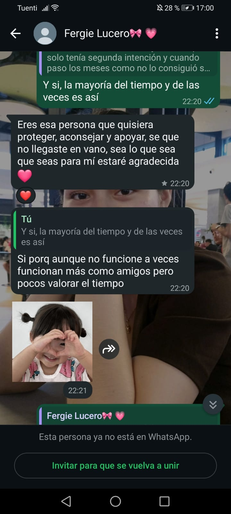
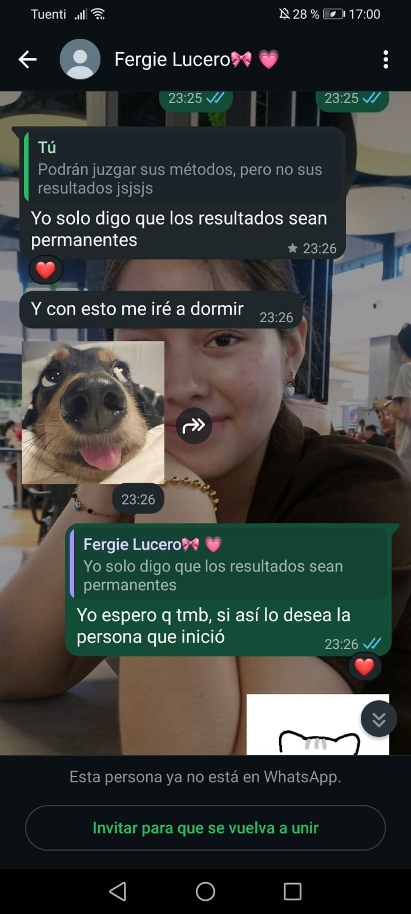
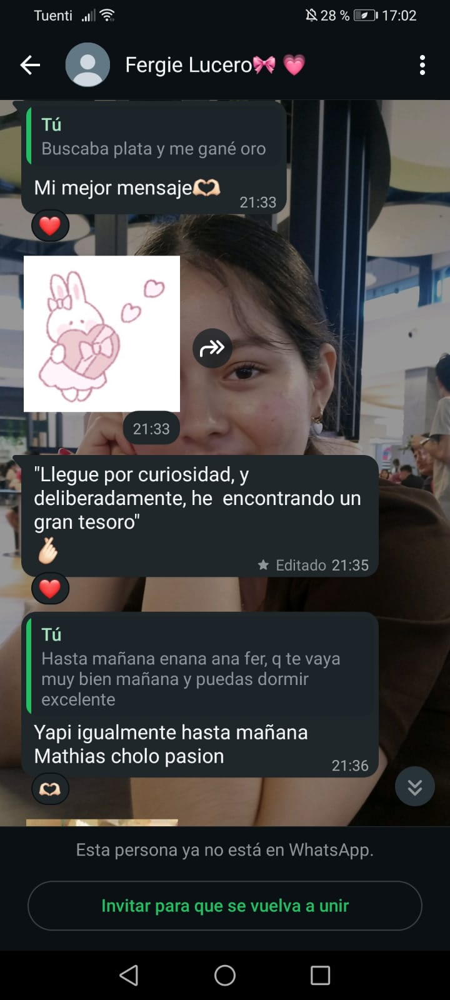
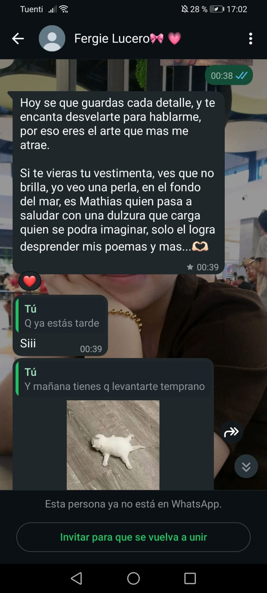
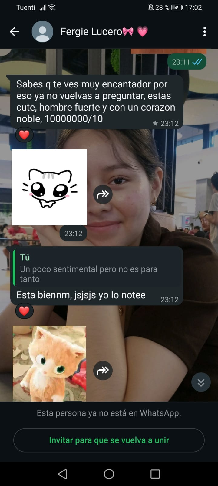
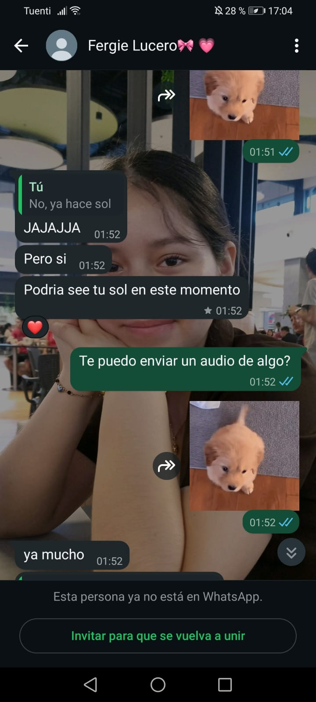
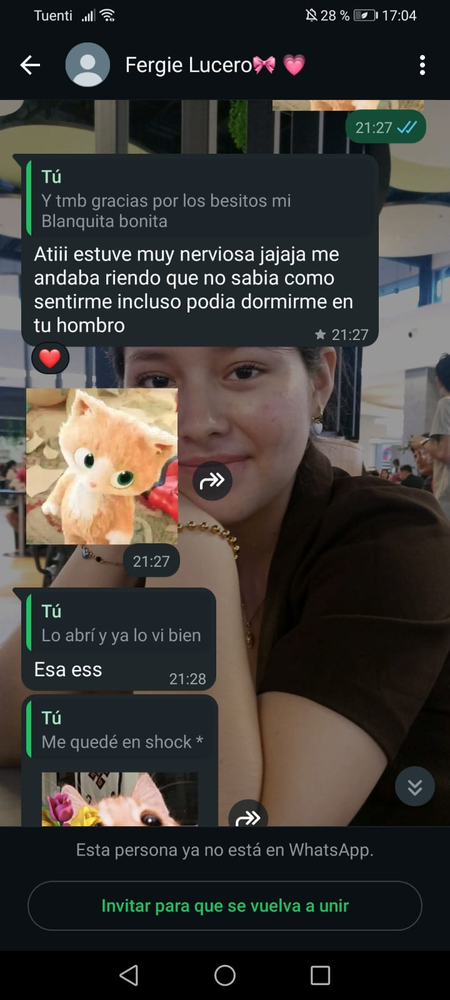
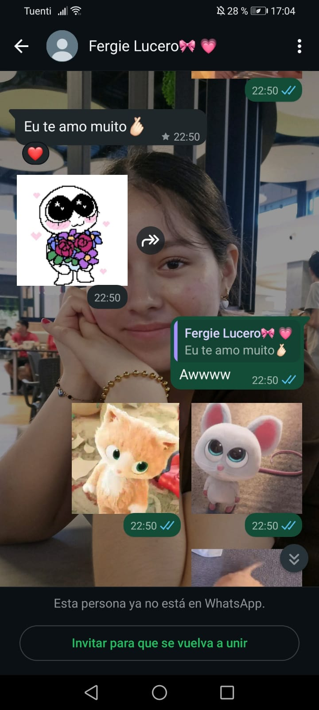
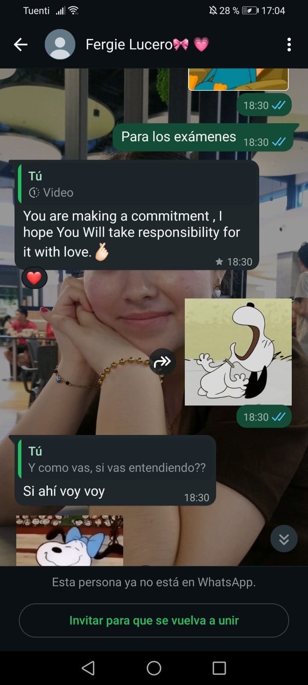
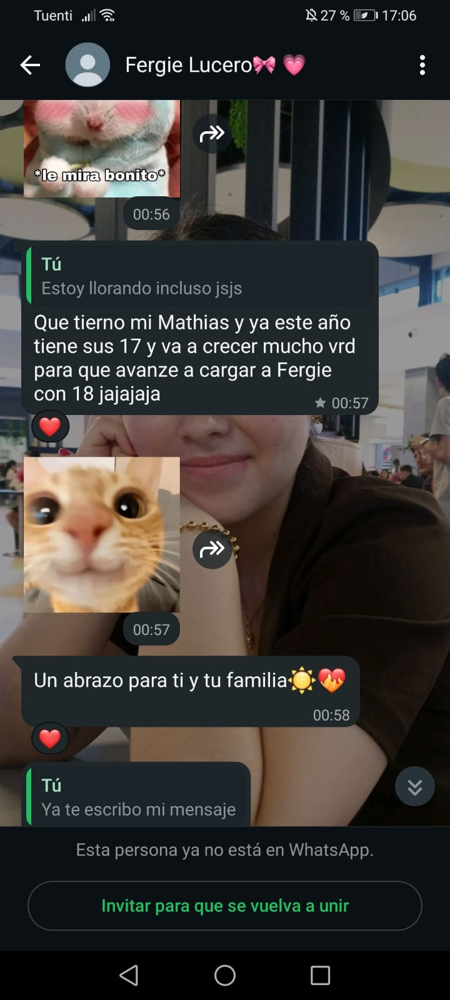
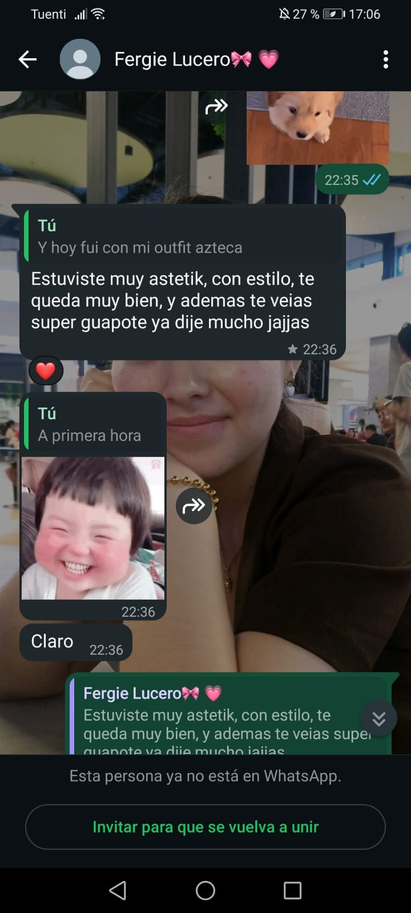
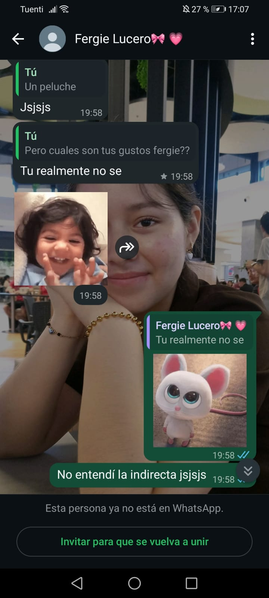
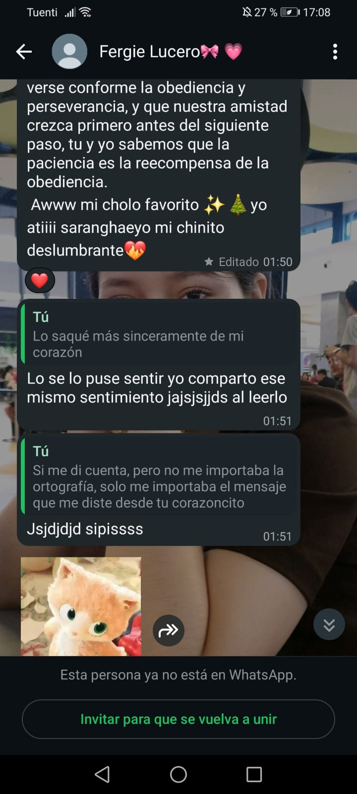
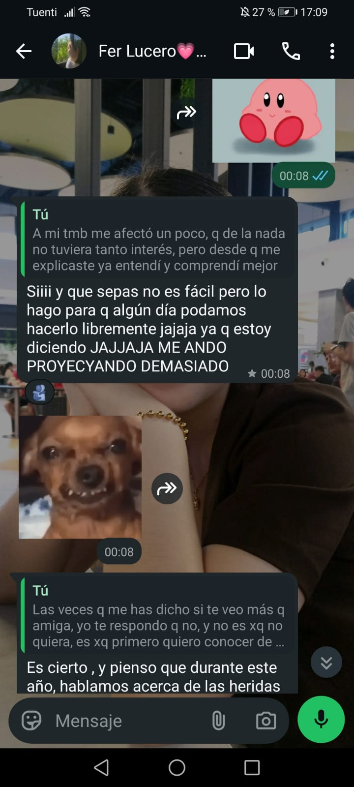
Aquí están algunas capturas de los mensajes más bonitos que me has dicho, y los he guardado en mensajes destacados, son mensajes de nuestro chat anterior y del nuevo, los he ido guardando y cuando quiero los reviso y siempre sonrío al cell, que mi mamá me pregunta a que le sonrío jsjsjs, cada mensajito lo aprecio demasiadoo ferrr, me encantan los mensajes que me sabes enviar y de verdad los aprecio muchisimooo, aunque ahora no escribes tanto esos mensajes pero ya me dijiste la razón de porque ya no lo haces tanto, y lo entienduu y respetuuu, pero que sepas que cada mensaje lo guardo con bastante afecto y emoción no solo en mi cell, sino también en mi memoria y mi corazón, uno de los mensajes que más destaca es cuando en año nuevo me escribiste y al final me pusiste "mi chinito deslumbrante" ese si me puso rojito y sin saber como reaccionar jsjsjsjs, te lo agradezco bastantee ferr por cada mensaje y detallito, me encantan demasiadooo😊😊 y la que me envía esos mensajes también🤭🤭 jsjsjsjs creo que me pasé con esa indirecta bien directa, pero bueno, te agradezco por cada mensajito que lo aprecio bastanteee🤗🤗